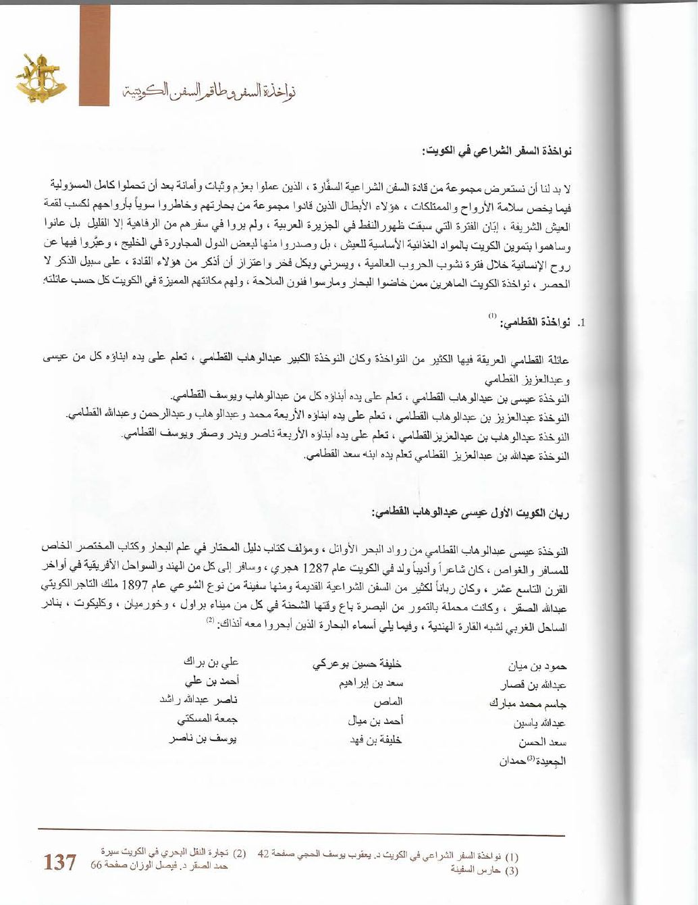
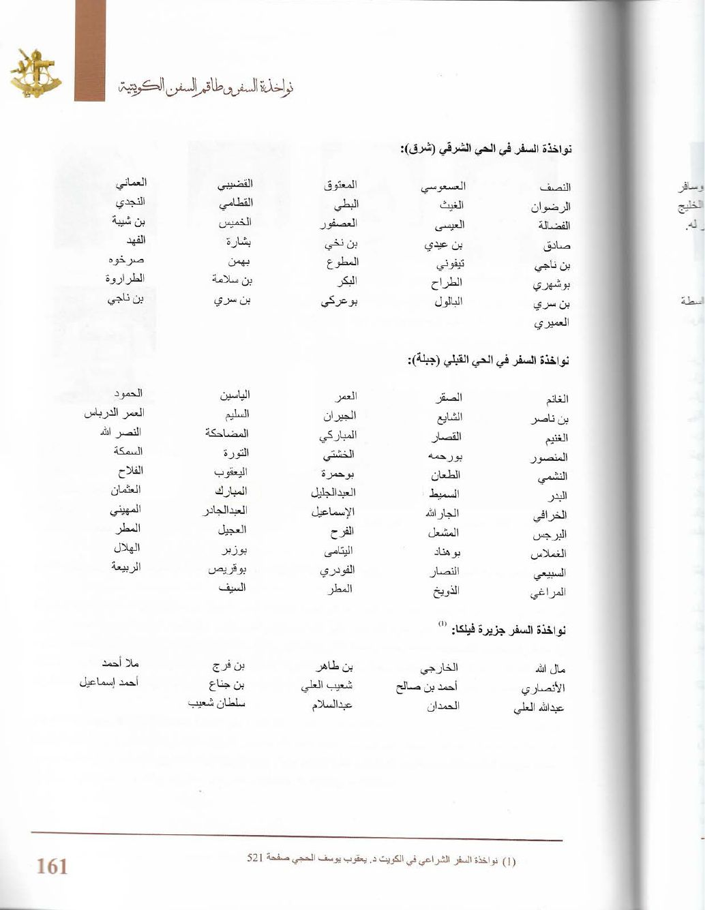
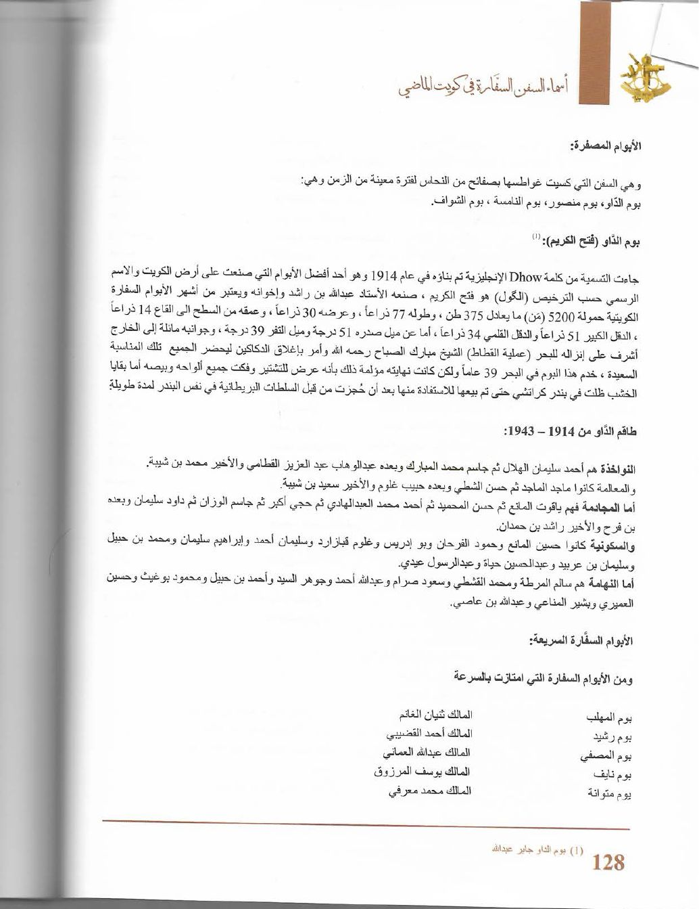

نحو ١٩٠٤ إلى ١٩٥٤
عائلة نواخذة
يفتتح د. يعقوب الحجي فصله عن العائلة بقوله: «القطامي عائلة متميزة من حيث ارتباط رجالها بالسفر وقيادة السفن الشراعية، ومن حيث عدد النواخذة المشهورين الذين برزوا فيها». فقد امتهن معظم رجالها قيادة السفن منذ السنوات العشر التي سبقت الحرب العالمية الأولى وحتى نهاية السفر الشراعي الكويتي، ولم يعملوا في الغوص على اللؤلؤ، بل في السفر إلى الهند واليمن وساحل أفريقيا الشرقي.
ويضيف أن رجال العائلة كانوا يشجع بعضهم بعضا ويعلم بعضهم بعضا، فحافظوا بذلك على مكانتهم بين كبار النواخذة. وقد التقى المؤلف بعدد منهم وسجل أحاديثهم، وبخاصة النوخذة بدر عبدالوهاب الذي «ترك في نفسه انطباعا طيبا لم تمحه السنون».



المصادر
- الحجي، نواخذة السفر الشراعي، ص ٤٢